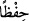

Müfred gâip zamirinden (
) ile azamet nûnuna geçilmesi, bu işe ne kadar önem
verilmiş olduğunu göstermek içindir.
“Ve (bozulmaktan) koruduk.” (
) kelimesi, (
)’ye mâtûf mukadder bir (
)’nın
mef’ûl-i mutlakı olup ‘yakın göğü âfetlerden ve kulak hırsızlarından koruduk’ demektir.
Şeytanlar ilâhî emir ve hükümleri çalmak için semâya yükselirler, fakat kendilerine, bu
yıldızların ateşlerinden kopan alevler atılarak geri püskürtülürler. Şeytanlara atılan,
yıldızların kendisi değildir; çünkü yıldızlar felekte/uzayda, daima bulundukları hâl üzre
sâbit ve yerleşiktirler. Söz konusu alevler, ateşten alınan korlara benzer; kor alınmasına
rağmen ateş hiç eksilmeden olduğu gibi kalır. (
) düşen ateş parıltısı demektir.
“Bu” ayrıntıları ile anlatılanlar, “mutlak izzet ve bilgi sahibinin” kudreti sonsuz
olduğu için kudrete konu olan her şey üzerinde sonsuz bir güce; bilgisi mutlak olduğu
için bilginin konusu olan her şeye dâir eşsiz bir bilgiye sahip birinin “takdîridir.”
Kâşifî der ki: “Yani yaratılışın güzelliği ile ilgili zikredilen her ne varsa Aziz ve Alîm
olan Allah’ın takdiriyledir; yaratmak ve düzene koymak göstermiştir ki hepsi de her
şeye gücü yeten bir sultanın, her şeyi hikmetle var eden bir hakîmin yaratmasıyla
olmuştur.”
Bu açıklamaya göre, âyet Arz’ın var edilişi ile semânın var edilişi arasında bir
sıralama olduğuna delâlet etmemekte, sıralamanın sadece ölçüp biçme/takdîr ile var
etme/îcâd arasında olduğunu göstermektedir. Ancak, mahlûkatın var edilişinin ve buna
mâtûf üç fiilin zahirî mânâlarına hamledilmesi durumunda Arz ve üzerindekilerin
yaratılışı sema ve içindekilerin yaratılışından öncedir; müfessirlerin çoğunluğu bu
konuda görüşbirliği içindedir. “Yeryüzünde ne varsa hepsini sizin için yaratan, sonra
göğe yönelip orayı yedi kat olarak düzenleyen O’dur” (el-Bakara 2/29) âyeti de bunu
destekler.
“Sonra da Arzı yayıp döşemiş” (en-Nâziât 79/30) âyetinin de gösterdiği üzre, Arz’ın
ana maddesinin yaratılışının göklerin yaratılışından önce olduğu, ancak yayılıp
döşenmesinin ve üzerindekilerin yaratılışının daha sonra gerçekleştiği de söylenmiştir.
Bu, ( ) yani ‘sonra’ kelimesinin zaman itibarı ile sonralık bildirdiği kabulüne göredir;
asttan üste doğru yükselmek sûretiyle rütbe bakımından bir sonralık bildirdiği
düşünülürse, göklerin yaratılışı arz ve üzerindekilerin yaratılışından daha büyük ve
önemli olduğu için gökler daha sonra yaratılmıştır denebilir, ki ulemânın çoğu bu görüşe
meyletmiştir. Bu durumda, -ilk takdirdekinin aksine- âyet göklerin ve yerin yaratılışı
arasında bir sıralama olduğunu göstermiyor demektir.
Şeyh Nîsâbûrî der ki: Allah, kendi fiillerinin mahlûklarınınkine benzemediğini
göstermek için semâyı arzdan önce yaratmak sûretiyle önce tavanı sonra temeli
yaratmıştır. Böylece yaptıklarını ne kadar san’atkârâne yaptığının bir göstergesi olmak
üzere çatıyı direksiz olarak yükseltmiş olmaktadır.
Fethu’r-Rahmân’da rivâyet edildiğine göre, Allah arzın ana maddesini Pazar ve
Pazartesi günleri yaratıp Salı ve Çarşamba günleri yayıp döşemiş ve üzerindekileri